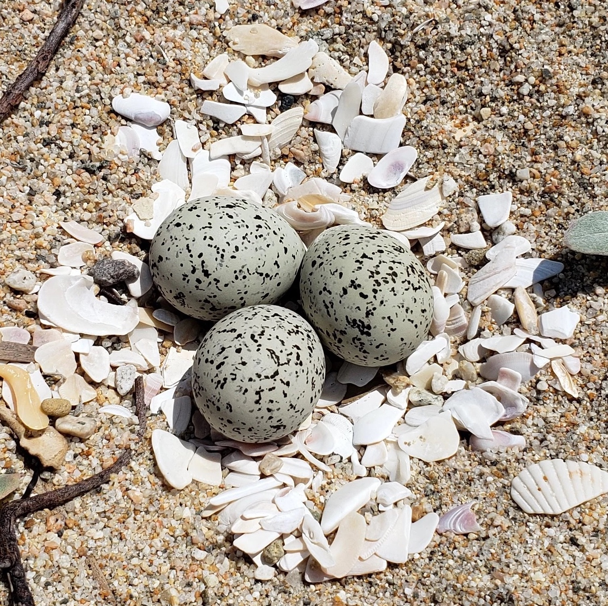

Welcome to the South Atlantic Coast
Here, you are able to find a safe place to stay at during the winter season.

During your time at the South Atlantic Coast, you will need to find food, a safe place to lay eggs,
and defend your eggs from the predators that may exist near you.
For now, it's just time to find something to eat.
Water Beetle
Worm